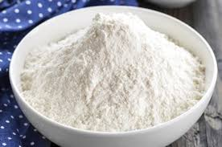

Tepung adalah partikel padat yang berbentuk butiran halus atau sangat halus tergantung proses penggilingannya. Biasanya digunakan untuk keperluan penelitian, rumah tangga, dan bahan baku industri. Tepung bisa berasal dari bahan nabati misalnya tepung terigu dari gandum, tapioka dari singkong, maizena dari jagung atau hewani misalnya tepung tulang dan tepung ikan.